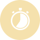

<ion-content [fullscreen]="true">
  <div class="container">
    <div class="title-container">
      
      <div class="titles">
        <p><b>{{title}}</b></p>
        <p class="subtitle">{{subTitle}}</p>
      </div>
    </div>
    <div class="timer">{{ timerValue }}</div>
    <ion-progress-bar *ngIf="progressbarVisible" [value]="timer$ | async" [buffer]="buffer_"></ion-progress-bar>
    <div class="buttons-container">
      <ion-button class="stop-button" shape="round" fill="clear" (click)="stop()"></ion-button>
      <ion-button class="pick-button" shape="round" fill="clear" (click)="openPicker()"></ion-button>
      <ion-button [disabled]="timerValue === '00:00:00'" class="play-button" shape="round" fill="clear"
                  (click)="play()">
      </ion-button>
    </div>
    <p class="description">После освоения какой-либо из медитаций, здесь вы можете учитывать ваш прогресс в ее
      регулярной практике.</p>
    <p class="description">Количество набранных очков в регулярной практике откроет доступ к более продвинутым
      медитациям и возможностям приложения.</p>
    <div class="top"><a class="exit" (click)="goBack()"><< Вернуться</a></div>

  </div>

</ion-content>
